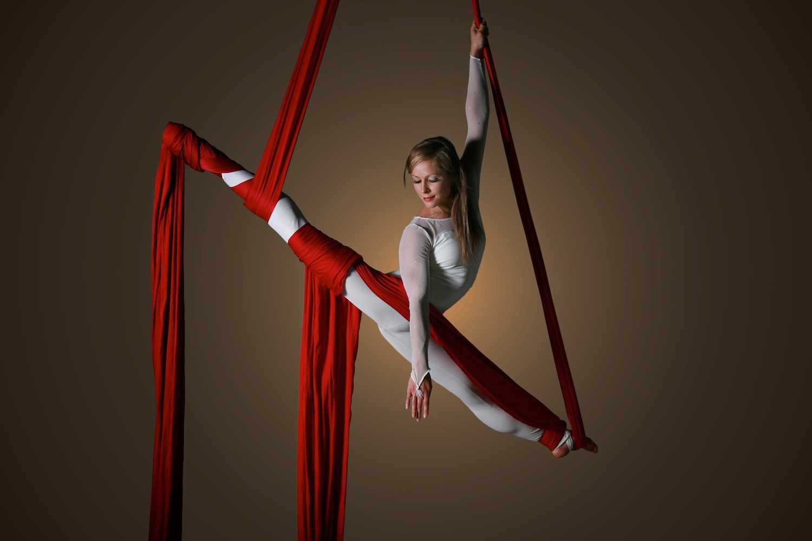
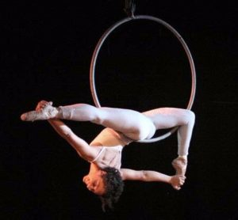
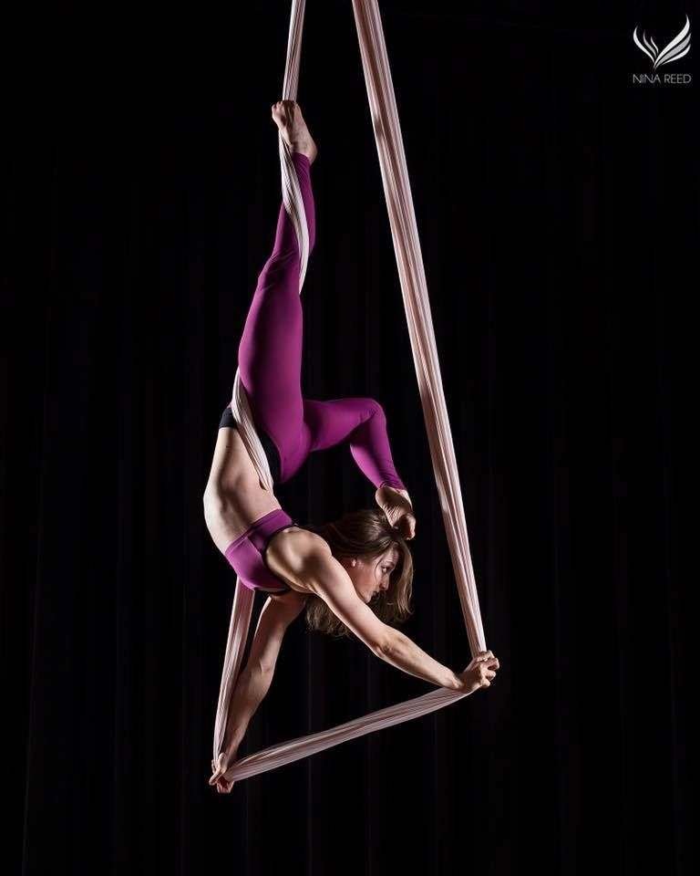

Cirque Craze
There are many ways to performe cirque! Aerial arts is a large and very interesting part of cirque
which includes silk, hammock, lyra, trapeze and more!

Above is an example of the performance of aerial silks. Aerial silks were
invented in 1995 by André Simard. He was hired by Cirque du Soleil to develop and research
acrobatics in 1987; his job was to discover original and imaginative ways to attract audiences.
Now silks have been incorporated into the circus arts and are practiced as a form of aerial fitness.
https://en.wikipedia.org/wiki/Aerial_silk

Pictured above is a photo of a woman in a half split on a lyra. The earliest known
metal hoop that was used dates back to the late 18th century, as a recreational item used
for children. There is no recorded lyra performance until 1893, when the entertainment
newspaper, the New York Clipper, featured a performer named “Caedo” performing a lyra
hoop routine for an advertisement.
https://www.volarepolestudio.com/lyra-aka-aerial-hoop

Shown above is the performance of aerial hammock. Aerial hammocks are another
form of aerial silks. With both made of a nylon tricot fabric, just rigged in different shapes,
they are essentially one in the same with variations of the same moves for performances.